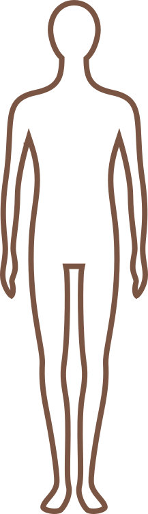

こんな症状の方に
以下のような症状でお困りのお客様にご来院いただいております。
頭・目・耳の症状
めまい/不眠症/耳鳴り/頭痛/突発性難聴/メニエール病
眼精疲労/起立性調整障害/更年期障害
首・肩の症状
喉の異物感 (ヒステリー球)/頑固な肩こり
胸・お腹の症状
機能性ディスペプシア (機能性胃腸炎)/過敏性腸症候群/胃の不調・胃下垂
げっぷ・しゃっくり/逆流性食道炎/パニック障害/喘息/動悸
女性特有の症状
月経前症候群 (PMS)/子宮筋腫
全身の症状
自律神経失調症/慢性疲労症候群/副腎皮質症候群/不安症
産後うつ/アトピー/がんの後遺症

上記の症状でお困りの方はぜひ一度ご来院ください。
「お腹ほぐし整体」で改善の手助けをいたします。
当院では、自律神経の乱れによって現れる「お腹のコリ」を、特殊な手技療法「お腹ほぐし整体」によって改善していきます。
施術法や料金に関しては以下のページをご覧ください。